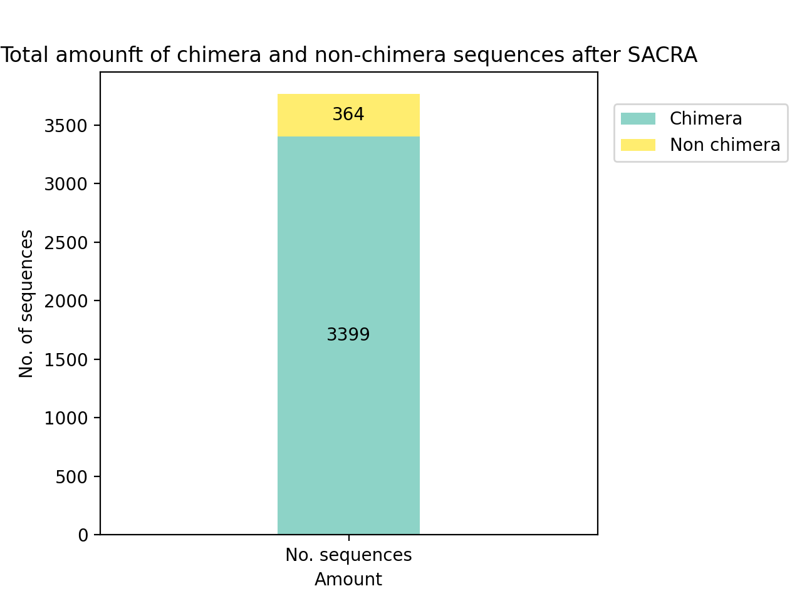
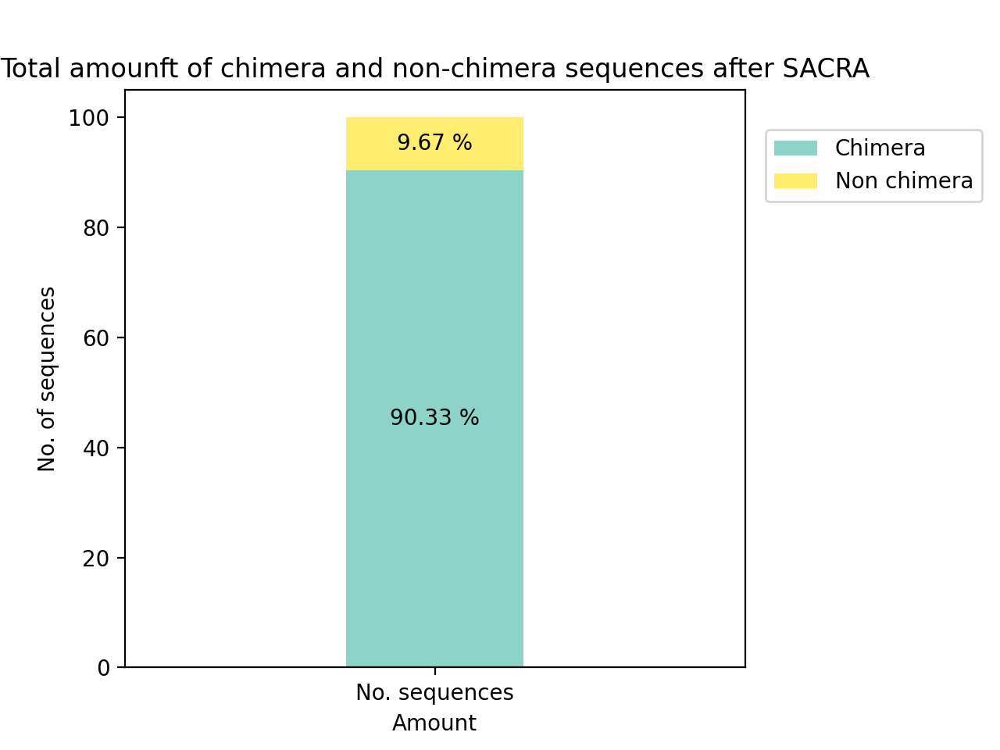
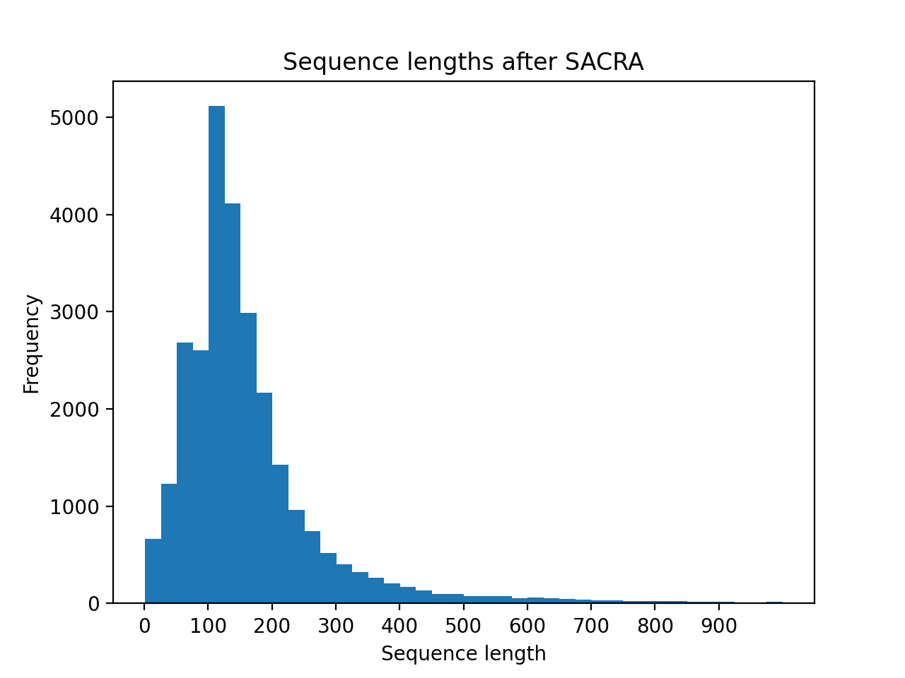
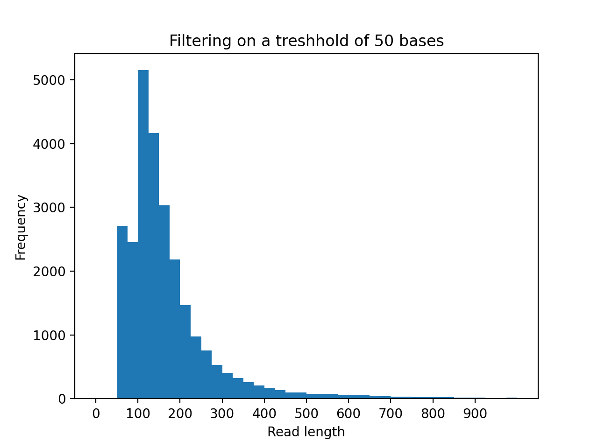

Statistical Report - Workflow
Porechop ABI
Trimming adapters from read ends
- SQK-NSK007_Y_Top: AATGTACTTCGTTCAGTTACGTATTGCT
- SQK-NSK007_Y_Bottom: GCAATACGTAACTGAACGAAGT
- 1D2_part_2_start: CTTCGTTCAGTTACGTATTGCTGGCGTCTGCTT
- 1D2_part_2_end: CACCCAAGCAGACGCCAGCAATACGTAACT
- Consensus_1_start_(100.0%): CATTGTACTTCGTTCAGTTACGTATTGCT
- Consensus_1_end_(100.0%): TTAACCTGATTTAACCTAACCTAACC
Adapters Removed
3,442 / 3,909 reads had adapters trimmed from their start (119,672 bp removed)
2,758 / 3,909 reads had adapters trimmed from their end (56,408 bp removed)
191 / 3,909 reads were split based on middle adapters
Prowler Trimming

Split Amplified Chimeric Read Algorithm (SACRA)



SACRA Filtered Reads
